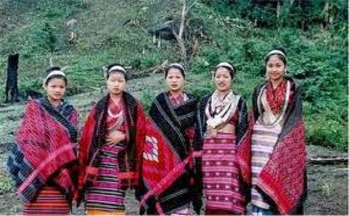

Himachal Pradesh
- Home
- Food

- Fashion

- Festival
- Minjar Fair
- Festival of Sair
Festival of Sair
Festival of Sair in Shimla at Himachal Pradesh is a renowned all over the country for its liveliness and splendor. Himachal Pradesh with its numerous fairs and festivals glorifies the Indian customs and traditions, and one of them is Festival of Sair in Shimla at Himachal Pradesh. Indian Festivals have a powerful western influence especially after the advent of the various conquerors like Alexander, Babur, Ibrahim Lodi and last but not the least, the British.
Minjar Fair
The Minjar Fair is held in Himachal Pradesh with great pomp and fanfare. Tourists throng the Chamba region at Himachal Pradesh during the Minjar Fair. It is a fiesta that brings into notice the rich cultural heritage of India. Numerous legends are associated with the Minjar Fair in Himachal Pradesh. - Festival of Sair
- Minjar Fair